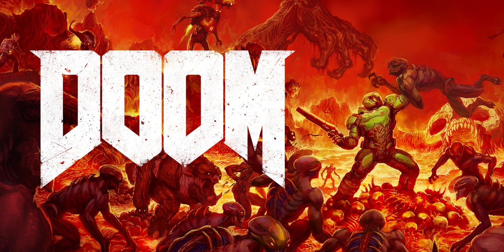

Videospielgeschichte
Das erste Videospiel wurde von William Higinbotham 1958 erstellt und hieß "Tennis for Two", später hieß es "Pong". Ein weiteres sehr bekanntes Videospiel war
"Space Invaders" welches 1978 erschien. 1981 wurde der erste Teil der Donkey-Kong Serie veröffentlicht, in diesem Spiel erschien auch zum ersten Mal die bekannte
Spielfigur Mario.
Das erste Virtual Reality spiel war "Sword of Damocles" und erschien 1968. Das erste Spiel das auch motion-capture benutzt hat erschien 1994
mit dem Namen "Virtua Fighter 2" VR hatte eigentlich erst in 2012 seinen ersten richtigen Durchbruch im Thema Videospiele
mit der Oculus Rift. Bekannte VR-Spiele sind momentan: "Beat Saber", "Boneworks", "Half-Life Alyx", "Superhot" und noch viele mehr.
Das erste 3D Videospiel hieß Battlezone und kam 1980 heraus. Ein sehr bekanntes First-Person Shooter Pixel 3D-Videospiel erschien 1993 mit dem Namen Doom,
die Doom Reihe geht heute noch weiter mit dem neuesten Teil "Doom: Eternal" welches am 20.03.2020 erschien.

Zurück zur Startseite